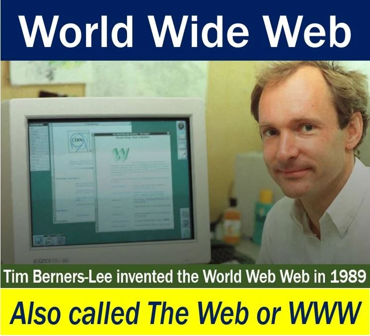

The Web, the popular short form for the World Wide Web, also known as WWW, is an online information system that allows documents to be connected to other documents through hypertext links, thus enabling the online user to search for data by shifting from one document to another.
In this article, the terms ‘Web’, ‘World Wide Web’, and ‘WWW’ have the same meaning. When its meaning refers to the WWW, the word ‘Web’ is a proper noun, i.e. it should always begin with a capital ‘W’